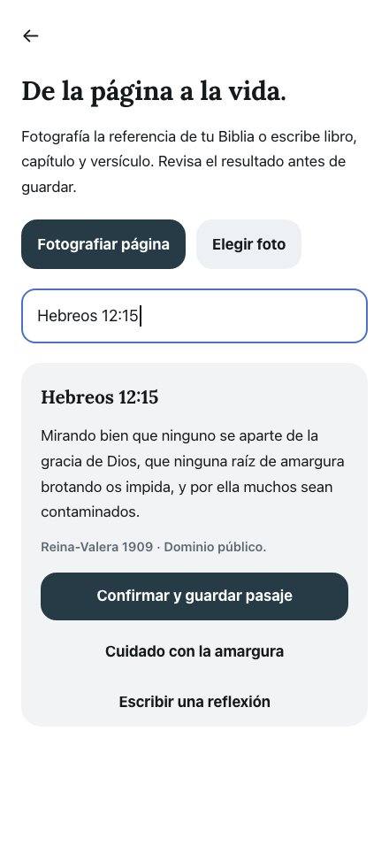

Biblia Vívida
Microlecciones bíblicas para leer en pocos minutos: la escena, el versículo revelado, lo que te llevas y cómo practicarlo. En español, portugués e inglés.
Para iPhone
Cómo funciona
Una idea a la vez, del texto a la vida.
Cada tarjeta recorre el mismo camino corto. Entiendes el pasaje, ves el versículo y sales con algo concreto para vivir hoy.
La escena
El contexto del pasaje en pocas líneas: quién, dónde y qué estaba en juego.
Revelar
El versículo aparece en el momento justo, con su referencia completa.
Llevar
El principio que atraviesa los siglos, sin exageraciones ni fórmulas hechas.
Practicar
Un paso sencillo para poner la idea en práctica hoy mismo.
La aplicación
Limpia, serena y hecha para leer.
El texto en primer plano, tamaño de letra ajustable y nada que compita con la lectura.

Funciones
Todo lo que te ayuda a leer, recordar y practicar.
Biblia sin conexión
Consulta los 66 libros en español, portugués e inglés, incluso sin internet.
Escucha
Oye tarjetas y libros en secuencia, a tu ritmo.
Historias animadas
Episodios cortos que muestran la escena antes de la lección.
Colecciones y guardados
Guarda pasajes y arma colecciones para volver después.
Diario e historial
Escribe reflexiones y sigue lo que ya leíste.
Recordatorios
Elige la hora y recibe una invitación discreta a leer.
Historias para ver
La escena antes de la lección.
Episodios cortos en animación 3D cuentan pasajes bíblicos con fidelidad al texto y lenguaje de hoy. Miras, entiendes el contexto y te llevas la lección.
Representación artística creada con ayuda de inteligencia artificial. El texto bíblico citado se identifica en cada episodio.
Empieza por la próxima página.
Unos minutos al día, una idea a la vez.